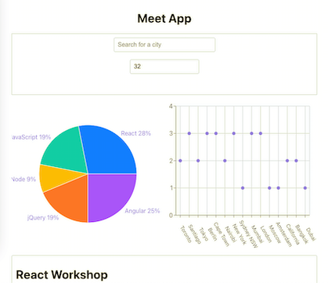
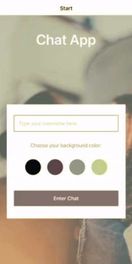

Work
Pokedex App

Within this project, I was responsible for the frontend. The app fetches from the open source Pokedex API so users can discover data about their favorite Pokemon. It’s written using JavaScript. Additionally, I've created the HTML and CSS templates with some CSS assistance from Bootstrap.
Check out this project on GitHubCheck out this project live
Movies App (React)

Within this project, I first created the documentary movie database in PostgreSQL to become familiar with relational database systems. The final version of the API was created using MongoDB, Express, and Node.js and endpoints were tested with Postman. The API is deployed through Heroku. For the frontend, I created a single page application using React.js to complete the MERN stack. The live app is deployed through Netlify.
Check out this project on Github:
Backend
Frontend
Check out this project live!
Movies App (Angular)

Within this project, I first created the documentary movie database in PostgreSQL to become familiar with relational database systems. The final version of the API was created using MongoDB, Express, and Node.js and endpoints were tested with Postman. The API is deployed through Heroku. I created this version of the frontend using TypeScript and Angular to complete the MEAN stack. The live app is deployed through Github Pages.
Check out this project on Github:
Backend
Frontend
Check out this project live!
Meet App
This app is a a serverless, progressive web application (PWA) built with React using a test-driven development (TDD) technique. The application uses the Google Calendar API to fetch upcoming events and uses the OAuth2 authentication flow to authenticate visitors. Users can discover events from various cities and data is displayed using tools from Recharts.
Check out this project on Github. Check out the live app!Chat App
Chat App is a mobile messaging app created with React Native. It features a customizable messaging interface and provides users the ability to chat, and send images and locations. The app was developed and tested using Expo and functionality from React Native Gifted Chat.
See project on GitHub